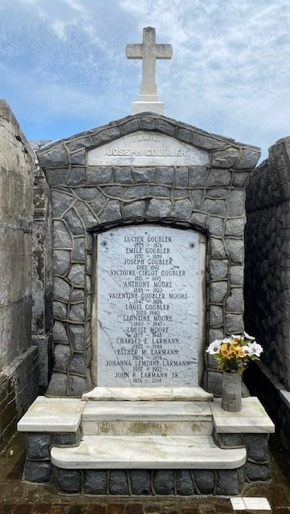
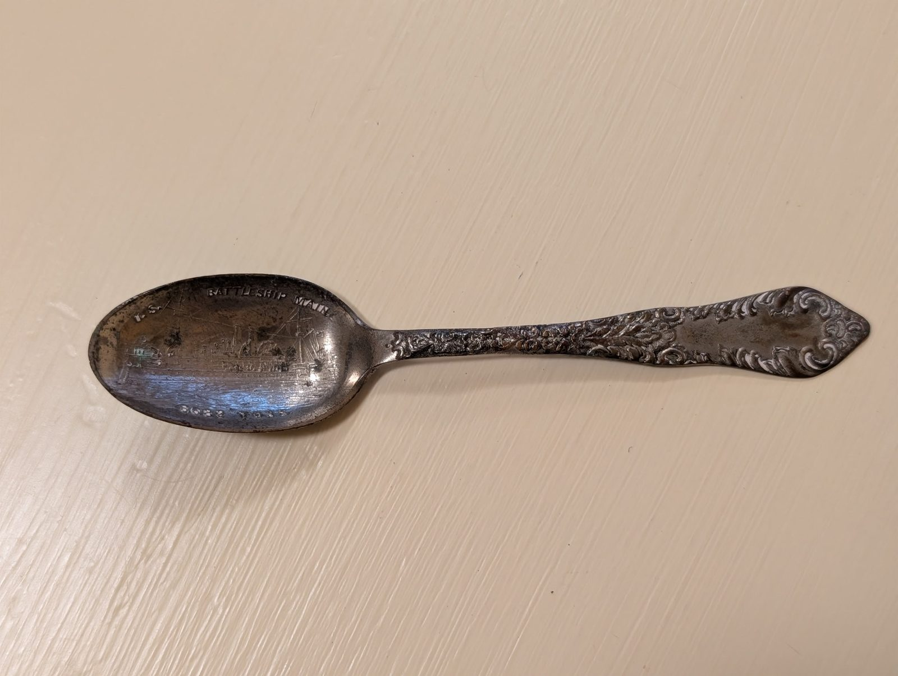
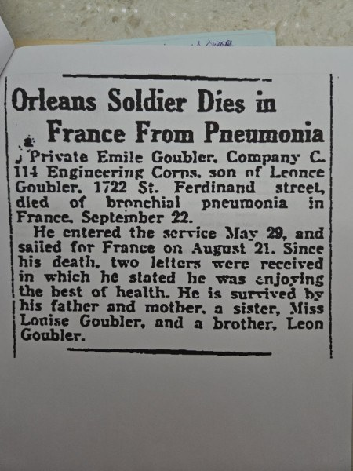
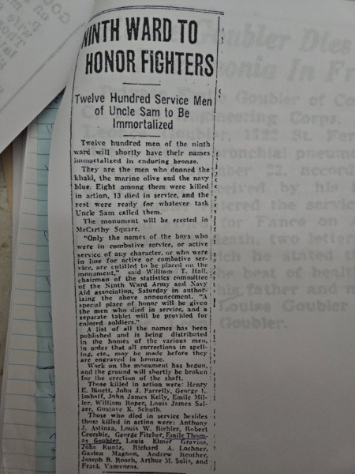
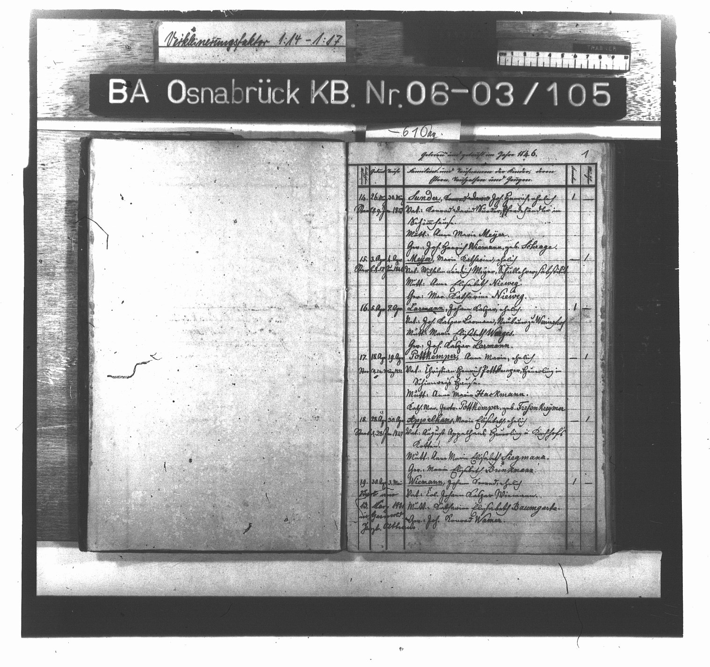
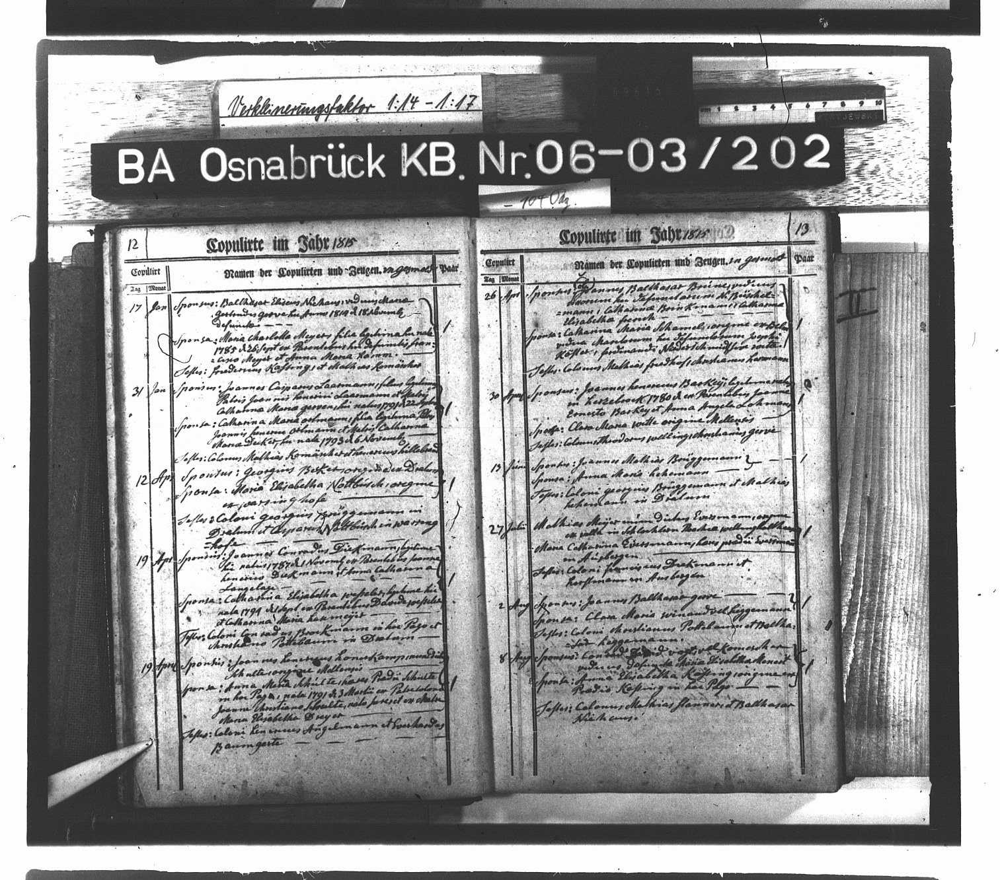
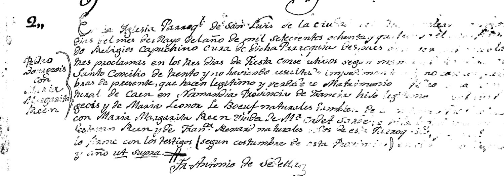

The research behind the tree
Field notes
The tree shows what we know. This page shows how we know it: the family papers, the dead ends, the stories we checked, and the questions that are still open. If one name here rings a bell for you, that memory is research material. Tell Kevin.
August 2026
Aunt Esther's ledger, and the papers Judy kept
In August 2026, Judy Larmann Gifford sent over two sets of family papers: a photocopy of a handwritten ledger kept by her great-aunt Esther Marguerite Larmann (1904–1976), and several pages of tree notes in Judy's own hand. Esther never married; she was the youngest of her family and its record-keeper, and her two pages carry birth, marriage and death dates for three generations, down to the day of the week and the godparents at each christening.
Nearly every date in Esther's ledger checks out against the Louisiana death and marriage indexes, several to the exact day. As a source, she has earned her keep.
The packet rebuilt the whole maternal side of this tree in one afternoon. Before it, the Larmann line stopped at Anthony H. Larmann, a name on a 1902 birth record. After it, and after a verification pass through the state indexes, the line runs back to John Casper Larmann, born in April 1846 in the Kingdom of Hanover, and the tomb his in-laws bought in the 1870s. (Esther's ledger gives his birthday as New Year's Day; his own baptismal act at Gesmold, read later, says the fifth of April. The register wins, but she had the year exactly right when nobody else had anything at all.) Five new couples joined the tree:
- John Casper Larmann (1846–1921), of Hanover, Germany, and Emily Mevers (c.1845–1882), married New Orleans, November 1870.
- Henry Moore (1847–1893) and Valentine Goubler (1848–1926), married New Orleans, May 1871.
- Joseph Goubler (c.1818–1892) and Victoire Théoline Circlot (c.1821–1895), Valentine's parents, patriarch and matriarch of the family tomb.
- Paul Alonzo Lemoine and Poppone Geneviève Roussel, with Valery Rousselle and Marie Eve Delatte: Creole names from the river parishes. The packet placed these four as Johanna's parents and grandparents. They are in fact her grandparents and great-grandparents — a whole generation was missing, and a phone call with Jean Pedeaux found it. See Robert Lemoine.
- Henry Bernard Wellmeyer and Caroline Lobmeyer, a fourth Wellmeyer generation, and Louis Edward Sander (1851–1914) and Catherine Ohr, married June 1872, Grandma Bertha's parents.
The ledger also returned two people the family had lost entirely. Esther Mae Larmann, born 18 July 1925, was Charles and Johanna's first child and John Richard's elder sister; she died at two and a half in February 1928, and the state index confirms her to the day. The family carried her without a name: John was always remembered as having lost his only sister when they were small. This is her. And Louisa Francis Larmann, listed in every earlier version of the family as a daughter who simply had no children, turns out to have died at eight months old in May 1898. The 1900 census confirms it, catching the household that June with only Mary and Bernadine at home.
The ledger against the index
Family memory and government paper, side by side. Where they disagree, the civil record is preferred and the difference is kept visible:
| Person | Family papers say | State index says | Citation |
|---|---|---|---|
| Anthony Henry Larmann, death | Fri. Feb. 12, 1904, age 32 | 12 Feb 1904, age 32 ✓ | Orleans deaths, Vol. 131 p. 1097 |
| Eugenie Moore Larmann, death | Feb. 23, 1921, age 46 | 23 Feb 1921, age 46 ✓ | Vol. 181 p. 257 |
| Charles Emile Larmann, death | July 13, 1969 | 13 Jul 1969, age 67 ✓ | p. 4760 |
| Esther Mae Larmann, death | Feb. 15, 1928, age 2 | 15 Feb 1928, age 2 ✓ | Vol. 195 p. 1884 |
| Henry Moore, death | Dec. 9, 189─ (digit clipped) | 9 Dec 1893, age 46 ✓ | Vol. 105 p. 417 |
| Valentine Goubler Moore, death | Feb. 14, 1926 | 14 Feb 1926 ✓ | Vol. 192 p. 169, under her maiden name |
| Louis Edward Sander, death | 11/12/1914 | 12 Nov 1914, age 63 ✓ | Vol. 161 p. 1051 |
| Casper × Emily, marriage | "Jan 1st 187─" (smudged) | Nov 1870 | Orleans marriages, Vol. 1 p. 662 |
| Emily Mevers Larmann, death | Feb. 13, 1882 | 11 Feb 1882, age 37 | Vol. 80 p. 272 |
| Anthony Leo Larmann, death | March 4, 1968 | 4 Mar 1969, age 68 | p. 1652 |
| Anthony Leo Larmann, birth | Thurs. Oct. 9, 1900 | 9 Aug 1900 — and Aug 9 was the Thursday, so Esther's weekday sides with the register | Births, Vol. 118 p. 595 |
| John Edward Wellmeyer, death | 12/15/1920 | 15 Dec 1922, age 69 | Vol. 186 p. 121 |
| Casper's second wife | "Louise Standed" | Both right — born Louisa Margaret Ehmann, raised by the Stauders; m. Apr 1884 ✓ | Vol. 10 p. 589; her death 1931, Vol. 202 p. 2195; censuses 1870, 1880, 1900 |
The hard part of the story
The papers also explain things the index alone never could. Anthony Larmann died at thirty-two, six weeks after Esther was born, and Eugenie raised six children alone. Judy's notes record, without a name, that Johanna's brother died in the orphanage. And the Wellmeyer page keeps the family's own arithmetic for a boy named Aloysius Roch, drowned in 1901: eleven years, one month, fourteen days. That is a number a mother counts.
Two things this section used to say, which were wrong. It read that Johanna's mother was "very probably the Genevieve Rousselle who died in Orleans in August 1915, when Johanna was eight." Both halves failed. Genevieve — Poupone — was her grandmother, not her mother; and Poupone did not die in 1915 at all, but on 21 February 1938 at Lucy, aged seventy-four. Johanna's mother was Agnes Margaret Hanley, who did not die young but left. The mistake is instructive: a woman who raises a child gets called her mother by everyone including the child, and eighty years later that is what the written tree inherits.
"Louise Standed" — and the correction I had to make twice
Judy's papers called Casper's second wife "Louise Standed." The marriage act called her Louisa Margaret Ehmann. Two names for one woman, and it took three tries to get right, so all three are worth showing.
First reading: the family had simply misremembered, and the act's other two names, John D. Ehmann and Katharina Lutz, were her parents. Second reading: the 1900 census turned up "Joseph Stauder, father-in-law" living in the house — so she must have been born a Stauder after all, the family was right, and "Ehmann" must be a first husband's name. That second reading was published here for a day. It was wrong, and worse, it made me demote a correct fact I already had.
What is actually true: she was born an Ehmann and raised a Stauder. The 1880 census settles it — at twenty-two she is already Ehmann, recorded single, and listed as a boarder in Joseph Stauder's house. A married name cannot belong to a single woman, and a man's own daughter is not a boarder under his roof. Every one of her six children's Orleans birth records names the mother Ehmann, and birth records carry the maiden name. The Ehmann girls were orphaned some time between 1860 and 1870 and taken in by Joseph and Barbara Lutz Stauder, who had no children of their own — Barbara being, in all likelihood, the sister of Louisa's mother Catharina Lutz. Her aunt and uncle raised her; the 1870 census wrote her down under their name; and thirty years later Joseph Stauder was still, to everyone who knew that family, Casper's father-in-law.
Both memories were true at once. "Standed" was the name she grew up under; Ehmann was the name she was born with. The failure was mine, for assuming one of them had to be a mistake.
Was he Anthony, or was he John Henry?
The RootsWeb file listed Casper and Emily's eldest as "John Henry Larmann, born 26 August 1871." Our Anthony was born 26 August 1871, to the same parents, in the same city. Same man, obviously — but under which name? It mattered more than most loose ends, because Anthony sits directly on the line of descent to Kevin, and a tree that gets a direct ancestor's name wrong gets everything hanging off it wrong too. So it was flagged rather than merged, and then chased.
He was Anthony Henry. Nine independent records say so and not one says John:
- His daughters' Orleans birth records — Mary Eugenia, 20 September 1896, certificate 91, and Louise Frances the year after — both name the father in full: ANTHONY HENRY LARMANN. Civil records, registered while he stood there.
- The 1880 census, "Anthony Larman," aged eight, in the household of J. C. Larman.
- The 1900 census, "Anthony H Larmann," born August 1871.
- His 1896 Orleans voter registration, "Anthony H Larmann."
- His 1895 marriage act, "Anthony Larmann, son of Caspar Larmann and Emily Mevers."
- His 1904 death record, "Larmann, Anthony, age 32."
- Aunt Esther's ledger — his own daughter's hand — "Anthony Henry Larmann."
- His FamilySearch profile, twenty-four attached sources, no alternate name recorded.
And the cross-check that closes it: his younger brother Henry's 1938 obituary lists the brothers by name, and lists Anthony and John C. as two different men. There was no John Henry. The likeliest explanation for the error is the dullest one — the father and two of the brothers were Johns, and a compiler working down a list wrote the name he expected to see.
Two half-families in one house
The same papers make the household legible for the first time. Casper married twice — Emily Mevers in November 1870, four children; Louisa Ehmann in April 1884, six more. The 1900 census catches all of it at 2833 Dauphine Street, and proves it arithmetically: Louisa is marked "six children born, six living," which is exactly the 1885-and-later set. So the two grown men at that table — John the barber, twenty-six, and Bernard the house painter, twenty-two — were Emily's boys, being raised by their stepmother alongside her own six. Ten children, two mothers, one roof, and eight civil birth records with volume and page that separate them cleanly at 1884.
Judy says there is more: "I have tons of info. Just never sat down to put it all down properly." Every page of it is welcome here.
Why nobody found this family before
The name that wouldn't hold still
The reason the Pedeaux line sat unfound for so long is simple: no two census takers ever spelled it the same way. Anyone searching "Pedeaux" straight down the decades finds nothing and gives up. The family was there the whole time:
| Census | Parish | Indexed as | Who's inside |
|---|---|---|---|
| 1850 | Assumption | PEDO | Antoine, Marie, baby Numa, with brother Baptiste "Pedo" next door |
| 1860 | Assumption | PEDEAUX | The widow "Ant" heading the household with five children |
| 1870 | Assumption | PADON | Numa, twenty-two, orphaned, heading a household of his four younger siblings |
| 1900 | Lafourche | PEDAUX | Numa, Eulalie, the children, and "Mary Pedaux, b. 1812, Mother" |
| 1910 | Assumption | TEDEAUX | Numa the widower with his daughters |
| 1950 | anywhere | nothing | The national transcription contains zero exact "Pedeaux": an OCR failure, not an absence |
The same trap nearly hides the family in the church books: Pedeau, Pedaux, Pedou and Pedeaux all appear, and the New Orleans notary family Pedesclaux sits immediately after them in every diocesan volume, waiting to be merged by a careless eye. The Mississippi coast Dedeaux family is unrelated. So is a "Jean, of Nantes, son of Jean Joseph and Jeanne PEDOU," who shadows the line through Volume 4.
A story, checked
Are we related to the man the airport was named for?
Family lore says the Moizants are kin to John Moisant, the aviator who crashed near Kenner in 1910 and gave MSY its old name, Moisant Field. It is a good story, and it was worth checking properly. The verdict: unlikely.
- Our Alfred Leopold Moizant was born in France in January 1838 and emigrated to New Orleans.
- The aviator's father, Medard Moisant, was born in Quebec in that same year, 1838, and emigrated to Illinois.
- Two men, exact contemporaries, from different continents' migrations: neither can be the other's father, son or brother.
- In ninety years of Louisiana records the MOIS- and MOIZ- spellings never once cross. No shared given names, no shared spouses, parents, or cemetery plots.
- John Moisant spent a total of eight days in Louisiana, as a touring exhibition pilot. "Moisant Field" honors a crash site. The airport code MSY stands for Moisant Stock Yards.
Why does the story feel true? Because there is a real New Orleans Moisant family, descended from the aviator's Quebec cousins, and because both surnames grow from the same medieval French root. A shared name origin five centuries back says nothing about two immigrant families being kin. One document would end the question for good: Alfred's French birth record or his passenger manifest, either of which would name his parents and his home commune.
The case, closed
John Brunetti's file — solved, August 2026
The oldest open case on the tree closed in one evening. The document that did it was the June 1921 marriage record (two entries, 15 and 18 June; licence Vol. 46, p. 90), which names the groom outright: John Brunetti, 28, son of Michele Brunetti and Domenica Forano — the same "father Michele, Plataci" a nineteen-year-old Giovanni gave the Ellis Island officers in April 1912. The chain the file spent years refusing to assume is now documented end to end: born 5 May 1893 in Plataci, the Arbëreshë village in Calabria; sailed from Naples in 1912; Chicago and the 1917 draft; First World War service confirmed by a Veterans Administration master index card (service dated 24 May 1919, New Orleans) — the service through which, the family always said, he became a citizen; married in New Orleans in June 1921, with Veronica's parents Anthony Franovich and Melanie Moizant standing as witnesses; died in New Orleans, January 1987. His parents are on the tree.
What remains, for gold-plating rather than proof:
- Veronica's 1923 birth certificate (Vol. 181, p. 2241, public since 2024) and the 1942 "old man's draft" card — each states his birthplace in a federal/civil hand.
- His Declaration of Intention at NARA Chicago (RG 21, soundex B653) — exact birthdate, ship, arrival.
- The St. Louis Cathedral sacramental act of the wedding, per family memory of the venue — Archdiocese of New Orleans archives.
- His January 1987 Times-Picayune obituary (microfilm, NOPL, 13–18 January 1987) — and the survivor list an obituary carries.
- Plataci's own registers (Cosenza civil records from 1809) — Michele, Domenica, and the generations behind them.
Method, made of marble
Two tombs that solved two lines
Twice now, a cemetery has done what no paper index could. The Wellmeyer tomb at St. Vincent de Paul No. 3 holds ten Wellmeyers who resolve cleanly into one household: Henry John, Bertha, three of their sons with their wives, his brother and sister, and one woman who fits no role in that family except daughter. That is how Ann Wellmeyer's parents were identified, a year before Judy's notes confirmed it in writing.

The Larmann tomb turns out to run five generations deeper than its name. Its roster starts with Joseph Goubler, born about 1818, and his wife Victoire Circlot; it took in their children, then their daughter Valentine's Moore children, then Charles Larmann who married into the Moores' line, then Johanna, then John Larmann Sr. himself in 2018. One vault, bought by an Alsatian-sounding family in the 1870s, still receiving the family a century and a half later. New Orleans burial custom is a genealogy engine: the tomb remembers who belonged to whom.
The living map
Cousins you may actually know
Genealogy gets real when it names people you have met. From the documented tree, these connections hold:
- The Slidell and Shreveport Pedeauxs: William, Kenneth, Nancy, Paul and David, the children of Uncle Sonny (Numa Louis Pedeaux Jr.) and Barbara Beth Smith, are Buddy's first cousins. Kevin's family knew Kenny.
- The Westbank Wellmeyers: Buzzy (Leslie Jr.), Sonny (Roeling), Jill, Dr. David and Steve are the children of Leslie Henry Wellmeyer, Grandma Ann's brother. Kevin's mother remembered Buzzy and Jill; Judy's notes list all five with their spouses.
- The attorney Larry Larmann (Lawrence Emig Larmann, 1941–2026) and his sister Barbara were the children of Anthony Leo Larmann, Grandpa Charles's brother, and Beryl Emig. First cousins of John Larmann Sr.
- The Thomas cousins: Mary Eugenia Larmann married Matthew U. Thomas in 1926; their son Matthew Jr. ("Mat," b. 1931) had Brian, Mark, Deborah and Cheryl in 1959–1965. Esther tracked every one of their birthdays in her ledger.
- The Himels of Labadieville descend from Marie Alice Pedeaux, Numa's sister, who married Taylor Paul Himel in 1873.
- The Melvin Pedeaux line descends from Philip Joseph Pedeaux, Numa Sr.'s eldest brother.
- Aunt Patricia (Patricia Pedeaux Ruda, married Sheldon Ruda) is Buddy's sister, in Rochester, New York.
A phone call and a headstone
Robert Lemoine, the Navy man in Arlington
In August 2026 a phone call with Jean Larmann Pedeaux put a new name at the center of the Lemoine story: Robert Lemoine, a career Navy man buried in Arlington National Cemetery, married to an Agnes. The cemetery's own database confirmed him within the hour: Robert Lemoine of Louisiana, May 7, 1888 – November 20, 1949, US Navy, World War I — chief commissary steward (the stone reads CCS), section 34, grave 1964. "He was head of all the foods and stuff — commissary something," Jean remembered. The stone says exactly that. And the Orleans marriage index holds his wedding: Robert Lemoine married Agnes Margaret Hanley in 1906 (Vol. 27, p. 962) — the year before Johanna was born.

Jean's account restored a generation the written tree had flattened: Robert was not Johanna's brother but her father, and Agnes Margaret Hanley — married at Orleans in 1906, with Johanna born the following 9th of January — her mother. Agnes "didn't die young, she just left them," while Robert was away in the Navy; it was Poupone (Genevieve) who raised Johanna, and the little girl called her grandmother "mother." That is exactly how a family tree loses a generation, and the family has now settled the tree accordingly. The paper agrees: an infant Agnes Lemoine, named for her mother, died at three months in Orleans in November 1909 (Vol. 147, p. 1104). The 1910 census holds the aftermath: the only Johanna Lemoine in Louisiana, age three, in an Orleans household; Genevieve there too; a toddler Robert born 1909 — very probably the boy the orphanage later took — and no Alonzo Lemoine anywhere in the country, no adult Agnes Lemoine anywhere in Louisiana.
And then, the same night, the clipping that closed it — Agnes's own obituary:
"WINSTINE — On Sunday, November 15, 1964, AGNES HANLEY, wife of the late William Winstine, mother of Mrs. Johana Lauman, Mrs. Elsie McPherson and William Winstine, sister of Mrs. Rose Stringer, Tom Neader and Mrs. Catherine Strom, a native and resident of New Orleans… Requiem Mass at St. Alphonsus Church. Interment in Cypress Grove Cemetery."
"Mrs. Johana Lauman" is Johanna Larmann — a typesetter's ear failing on a name the family knew perfectly well. Agnes Hanley's own death notice names Johanna as her daughter, which is the one thing this reconstruction still lacked: proof in print, from the other side. It also confirms every detail Judy had written down from memory — the Winstine second marriage, the half-siblings Elsie and William, and Agnes's own brother and sisters, name for name. She was buried from St. Alphonsus, the old Irish Channel church, which suits a Hanley.
Johanna is listed first among the children, which is only what you would expect of the eldest — and it would be easy, and wrong, to read warmth into it. Judy remembers otherwise. Her grandmother talked about Elsie, she says, without ever letting on that Elsie was her half-sister. But Johanna never met Agnes at all until John was a boy — she would have been in her thirties — and what her son remembered of it was that she did not want to go.
So the ending is quieter and harder than a reunion. A woman who was raised by her grandmother, who kept up with the half-sister but not the mother, and who agreed to the meeting once, late, with her boy watching. Both facts belong here: the obituary that finally proved the connection, and the family's memory of what the connection was actually worth.
Four months in uniform
Private Emile Goubler
Two newspaper clippings, kept by the family and sent on by Judy Gifford in August 2026, record the shortest life in this archive. The first is a death notice:
"Orleans Soldier Dies in France From Pneumonia. Private Emile Goubler, Company C, 114 Engineering Corps, son of Leonce Goubler, 1722 St. Ferdinand street, died of bronchial pneumonia in France, September 22. He entered the service May 29, and sailed for France on August 21. Since his death, two letters were received in which he stated he was enjoying the best of health. He is survived by his father and mother, a sister, Miss Louise Goubler, and a brother, Leon Goubler."
The records fill in what the paper left out. Emile Thomas Goubler was born in New Orleans on 2 June 1892, son of Leonce Goubler and Theresa Baron (Orleans birth register, Vol. 96, p. 411). The Louisiana death index carries him home: GOUBLER, EMILE THOMAS — 22 September 1918, Orleans, Vol. 180, p. 527. He had been a soldier for sixteen weeks, and in France for thirty-two days.
He almost certainly did not die of anything the enemy did. Bronchial pneumonia among American troops in France in late September 1918 is the signature of the influenza pandemic, which was then tearing through the AEF's camps and troopships and which killed more American soldiers that autumn than German fire did. The two cheerful letters that arrived after the telegram are the detail that stays with you: they were written by a man who did not yet know, and read by a family that already did.
The second clipping is the aftermath, in the flat language of the court: Succession of Emile Thomas Goubler, Civil District Court for the Parish of Orleans, No. 209,769, Division B — "Whereas Leonce Goubler has petitioned the court for letters of administration on the estate of the late Emile Thomas Goubler, deceased, intestate." A father applying to administer his twenty-six-year-old son's estate, published three times in November 1918. That succession file still exists in the Orleans Parish court records, and a soldier's succession usually lists his effects and his war risk insurance — the paper trail of everything he owned.

And his name is in bronze, three blocks from where he grew up. A third clipping reports that the Ninth Ward was raising a monument to its twelve hundred service men, to be erected in McCarthy Square — and in the list of "those who died in service besides those killed in action," between George Fitcher and Louis Elmer Gravios, is Emile Thomas Goubler. That monument was built. It is the Victory Arch, dedicated on 14 March 1920 in McCarthy Square in the Bywater, bounded by Alvar, North Rampart, Pauline and Burgundy — a granite arch carrying four bronze plaques with 1,260 names, and reckoned the first permanent memorial in the United States to the men of the First World War. It still stands. His father's house at 1722 St. Ferdinand Street was a short walk away.

How he connects — answered. Two more obituaries and a pedigree profile, sent the same evening, closed it. His father's notice reads: "Of 1722 St. Ferdinand street, on Tuesday, November 14, 1939… LEONCE J. GOUBLER, husband of the late Theresa C. Baron, father of Mrs. Thomas Gavin and Leon J. Goubler and the late Emile T. Goubler… aged 75 years; a native of New Orleans." And the family profile of Marie Valentine Josepha Goubler lists her brothers and sisters — among them Leon Goubler, born 1860. Leonce was Valentine's own younger brother.
Which places Emile exactly. He was the grandson of Emile Joseph Goubler and Théoline Cirlot — the couple in the tomb — and the nephew of Valentine Goubler Moore, whose daughter Eugenie was his first cousin. In Kevin's terms: first cousin, four times removed. The soldier was named for the grandfather he shared with this line, and both his given names run back through it. He is family, and the page can say so.
The rest of that household, from the same two notices: his sister Louise married Thomas Gavin; his brother Leon Joseph Goubler (29 January 1890 – 18 November 1963) married Celine Coman, raised five children and ten grandchildren, and was a member of Plumbers and Steamfitters Local No. 60 — as their father had been before him, the union turning out for both funerals thirty-four years apart. Leonce was buried from St. Mary of the Angels into St. Roch Cemetery; Leon Joseph from St. Raphael's into St. Vincent de Paul, the same ground as the Goubler tomb.
A record this family owns
Valery, aged four
On 23 November 1819, before the notary A. D. Tureaud in St. James Parish, a child was sold. The document survives, and because of it we know his name.
Valery. Male. Louisiana Creole. Age 4. Comments: orphan. Seller: Rousselle, Christophe. Buyer: Rousselle, Valery. Sold as an individual. Standardized value: 515.
He was four years old, he had no parents living or none the record would name, and he was transferred between two brothers who shared a surname this family carries. He was given — or already had — the buyer's own first name. That is the entire sum of what is known about him, and it exists only because the historian Gwendolyn Midlo Hall spent decades reading Louisiana notarial books and building a database of some 100,000 enslaved people, so that names like this one would stop being invisible. This page carries his because the whole point of that work is that he should be named.
What is documented, and what is not. A Valery Roussel of St. James Parish, born about 1796, appears in the censuses of 1820, 1840 and 1850, and on the slave schedules of 1850 and 1860 — a slaveholder across four decades. He is the man in this 1819 act. Johanna Lemoine's great-grandfather was a different Valery Rousselle, born about 1841, living one parish downriver at Edgard in St. John the Baptist. The family's own research holds that the 1819 buyer and seller were brothers of this line, and the chronology fits an ancestor two generations above ours — but no record read so far ties the two Valerys together directly. So: the elder Valery's slaveholding is documented fact; his exact place on this tree is probable and not yet proven, and it is recorded that way rather than either claimed or quietly dropped.
The honest next steps are the ones that would tell us more about the child, not less: the 1850 and 1860 slave schedules for Valery Roussel of St. James, which count the people he held; the rest of the Tureaud notarial books; and the sacramental registers of St. James, where enslaved people were baptized, married and buried by name. A Valery who was four in 1819 would have been forty-six at emancipation, and may well appear in the 1870 census as a free man with a surname of his own choosing.
One more thing is worth saying plainly, because it is what makes this page necessary rather than optional. This is the same stretch of river the family still went back to within living memory: Johanna's son John was taken as a boy "to the country" — to Lucy and Gramercy — to see his great-uncle Aurelian. Those villages sit on the same bend where the 1819 act was signed. The pleasant family memory and the notarial record are describing one place.
One night, two brick walls
Gesmold and Ibbenbüren
For as long as anyone had been asking, the German half of this family came from a blur: "Hanover," and a word in Aunt Esther's ledger that looked like Gruswald and matched no place on any map. On 10 August 2026 both towns turned up within an hour, in the same collection, by the same trick that had just cracked the Brunetti case: church marriage records name the couple's parents, and Louisiana's civil index never did.
The Larmanns came from Gesmold, a village in the Melle district near Osnabrück. Casper's second marriage in New Orleans, on 26 April 1884, entered him as John Casper Larmann, 36, son of John Casper Larmann and Maria Elizabeth Wergers — two names his descendants had never had. His German profile fills in the rest: born 5 April 1846 at Gesmold, christened there two days later, son of a Johann Caspar Larmann and Maria Elisabeth Werges who had married in that same village on 8 November 1843. Three generations of Johann Caspar Larmann in a row, which is exactly why the American records blur them together.
Then the register itself was read. The Gesmold Catholic parish books are digitized in full, back to 1674, and free — and on the first page of the 1846 baptisms, entry sixteen:

It also answers Mom's story about the name. His father is entered as a Neubauer — a new-settler farmer, working newly broken land at Weringhof: the lowest rung of the landholding peasantry, about as far from nobility as a landholder gets. Whatever "von Larmann" meant in this family, it did not mean a title.
And the history explains why he left. Gesmold belonged to the Kingdom of Hanover until 1866, when Prussia annexed the kingdom after the Austro-Prussian War — and Casper emigrated in 1866 or 1867, at twenty. He was not unusual: between 1832 and 1886 Hanover lost more than 183,000 people to emigration, and the Osnabrück country alone supplied forty-two percent of them.
And then the family said it out loud. Judy Gifford sent a page in her own hand, copied from her grandmother's papers:
"Grandfather Larmann + a brother came to this country from Hamburg, Germany to escape compulsory military service. He, Casper Larmann, eventually settled in Point-a-la-Hache near the mouth of the river… A brother + a sister, who was a nun, remained in Germany, the nun also coming here later. The order she was in is not known."
That is the annexation, in one sentence, written down by someone who had it from the man himself or his children. Prussia took Hanover in 1866 and brought Prussian conscription with it; Casper was twenty; Hamburg was the port. A family story and a treaty date landing on the same year is about as close to corroboration as oral history ever gets. And it peoples the Gesmold house: four children accounted for — two who sailed, one brother who stayed, and a sister who took the veil in Germany and followed her brothers over later, her order never written down.
And then the brother turned up. A Brooklyn death certificate of 29 November 1938 records Henry Larmann, seventy-two, a laborer, born 24 December 1856 in Germany — and names his parents as Caspar Larmann and Elizabeth Werger. The same Gesmold couple, heard by a New York clerk instead of a New Orleans one. Casper's brother did not come to Louisiana; he went to New York and raised a family there, and the two halves lost each other. There are Larmanns in Brooklyn and Queens in the death indexes who are almost certainly his — and one New Orleans Larmann who went north to join them: Albert, Casper's own son, born 22 December 1891. Where and when he died is an open disagreement. A New York death index entry has him dying there in 1964; Judy Gifford's own annotation, in pencil on her copy of his record, reads "died 1944, Hackensack, Bergen, N.J." Hackensack is nine miles from the Bronx, so both versions agree on the important part — the boy from Dauphine Street ended up in his uncle's corner of the country — but twenty years and a state line separate them, and neither has been checked against a certificate. Henry's naturalization papers survive in the federal court records, and a naturalization states the date, the port and often the ship — which is the closest anyone has come to the actual crossing.
The other surprise in that sentence is Pointe-à-la-Hache. Before New Orleans, Casper settled in lower Plaquemines Parish, down near the mouth of the river — which is the same stretch of delta where, a generation later, the Franovich and Moizant families were living on the other side of this tree. Two branches that would not meet for sixty years, both starting out in the same thirty miles of riverbank.
Two more acts in the same books carried the line back another two generations. The marriage of Casper's parents, 8 November 1843: "Larmann, Johann Caspar, Neubauer, geboren d. 6ten April 1821, mit Maria Elisabeth Werges, geboren zu Haste d. 27 Jan. 1817." And then, in Latin, the marriage of his grandparents on 31 January 1815 — five months before Waterloo — naming Joannes Casparus Laarmann, born here 22 September 1791, legitimate son of Joannes Henricus Laarmann and Catharina Maria Gerven, marrying Catharina Maria Ortmann, born 6 November 1793, legitimate daughter of Joannes Henricus Ortmann and Catharina Maria Decker. Four names that an hour earlier had been unsourced guesses on a community tree, and are now written evidence — in a book that continues back to 1674.
Three Caspars in a row invites an obvious suspicion, so here is exactly how much weight each link bears. That they are three different men is certain: the acts themselves state three different birth dates — 22 September 1791, 6 April 1821, 5 April 1846 — and a man cannot be the groom of 1815 and the newborn of 1846. That the 1821 man fathered the 1846 boy is proven: the baptism act names the father as a Caspar Larmann, Neubauer, married to Maria Elisabeth Werges, and the 1843 marriage act shows exactly that man marrying exactly that woman — two records, read directly, locked together by the wife's name and the trade. But that the 1821 man was the son of the 1791 man is not proven. His own baptism act has never been read; the link rests on an online reconstruction and on the dates fitting. It is carried here at confirm rather than verified, and the act that would settle it is in the Gesmold baptism register for 1811–1826 — online, and still unopened.

The Wellmeyers came from Ibbenbüren, in Westphalia — Bernard Heinrich Wallmeyer, christened there 1 July 1823, son of Gerard Joseph Wallmeyer and Maria Anna Stiegemann. Gesmold and Ibbenbüren sit about thirty miles apart. Ann Wellmeyer and John Larmann married in New Orleans in 1947 having no idea their great-grandfathers came from neighboring corners of the same countryside.
On the "von Larmann" story. The family remembers hearing the name was von Larmann in Germany, which usually sounds like a claim to nobility. The register says otherwise, and says something better: these were Neubauern, new-settler farmers. What the story probably preserves is the regional custom rather than a title — northwest Germany used Hofnamen, farm names, and a family took the name of the farm it worked, written with von or zu, meaning simply "of." A man who married onto a different farm changed his surname to match. "Von Larmann" would mean of the Larmann place. Mom's memory is doing real work here — it just points at a farm, not a castle.
The deepest root
"All of them natives of this parish"
The oldest documented person in this archive is Étienne Reyne, a master mason of French colonial New Orleans, nine generations back on the Gaiennie side. For a long time this page said his birthplace was unknown — France or the colony, no way to tell. That was wrong, and the answer had been sitting in a record we already had.
In August 2026 the Archdiocese of New Orleans' own digitized register settled it. On the first written page of the marriage book that opens in 1784, the second entry of that May:

"Naturales todos de esta Parroquia" — all of them natives of this parish. The word doing the work is todos. It reaches past the bride to her parents. Étienne Reyne and Françoise Renard were not immigrants; they were born in New Orleans. A man working as a master mason and baptising children from 1752 was most likely born in the 1720s, inside the first decade of a town founded in 1718.
There is a lesson in the spelling, too. The Spanish clerk wrote REEN. The French registers have Reyne, Reine, Renne and Rehene. Anyone searching one spelling finds none of the others — which is the same trap that hid the Pedeaux line for years.
So the answer to "how long has this family been in Louisiana" is not 1752, the year of the oldest baptism we can read. It is a generation earlier still, and the record says so itself.
The groom is worth a line as well. Pedro Bourgeois — the Norman the widow married at thirty-one — is entered as "natural de Caen en Normandía, Provincia de Francia," legitimate son of a Bourgeois and Marie Léonore Le Boeuf. Two more names, and a town, that were not on this tree an hour before the page was opened.
What is still out of reach. Marguerite's own baptism of 6 November 1752 is not among the digitized books: the Cathedral's online baptismal series begins in 1753, missing her by a single year. The abstract of it, quoted on her panel, remains the only version of that record we can read. Four of her brothers' and sisters' baptisms (1755, 1757, 1761, 1766) do fall inside the digitized volumes and are still to be found.
Still hunting
The open questions
- Which Michel crossed. The 1810 census and a sweep of every Nantes death table from 1793 to 1852 both point at Michel Pierre, born at Chantenay in 1777 — but Chantenay-sur-Loire kept its own registers until 1908, and those have not been read. They get the last word.
- Where the Lemoines came from — the last branch with no other shore. Alexis Lemoine, once the wall itself, is solved: he was Paul Alonzo's father, and the Edgard registers carry them both. But above him the line still stops in the river parishes in the 1820s. Every other branch on this tree reaches a named town in Europe or an Acadian village; the Lemoines and Rousselles reach Edgard and Lucy and go no further. The next documents are the Alonzo × Geneviève marriage act, which should name all four parents, and Alexis's own marriage and death records. There are also two men called Alexis Lemoine in that parish in those years, and they have not been untangled.
- What actually sent the children to the orphanage. The story was always that Poupone's death did it — but she lived until 1938. So the reason is unknown, and so is the name of Johanna's brother who died there. No Lemoine boy's death appears in Orleans between 1915 and 1922 except a two-year-old Warren in 1916, who fits no known child.
- The Hamburg crossing, and the Brooklyn Larmanns. Casper sailed in 1866 or 1867 with his brother Henry, and no manifest has been found. Two notes for anyone who tries: Ellis Island is the wrong place — it did not open until 1892, and he landed at New Orleans, not New York — and Gesmold's own emigrant register stops in 1865, just short. The live leads are the New Orleans arrival lists and Henry's naturalization papers in the federal courts, which would name the ship. Beyond that: who Henry's Brooklyn descendants are, and why Casper's son Albert followed his uncle north.
- Louisa Ehmann's parents and the 1860 household. John David Ehmann and Catharina Lutz are named on the 1884 marriage act, but nothing else about them has been read — no marriage, no deaths, no arrival. The candidate 1860 census household ("J. Heman," 36, born Prussia, with a three-year-old Louisa) is a tentative identification by another researcher and has not been verified. What orphaned those girls is unknown.
- Agnes Hanley's own people. Her parents, her birth date, and her marriage to William Winstine, which is in no Orleans index under either surname and so was probably made in another parish.
- Two more German villages. The Gesmold registers run back to 1674 and should carry the Larmanns above Johann Heinrich Laarmann; the Bertrambois registers in Meurthe-et-Moselle hold Claude Goubler's 1808 marriage act, which would name his parents; and Ibbenbüren holds the Wallmeyers. All three are online.
- The Cirlots, 1825. Jean Auguste Cirlot and Adélaïde Pouponneau Petit both died that year, leaving a four-year-old. The New Orleans burial registers for 1825 would give the days and probably the reason.
- Valery, aged four. The 1850 and 1860 slave schedules for Valery Roussel of St. James, the rest of the Tureaud notarial books, the St. James sacramental registers where enslaved people were baptized by name, and the 1870 census — where a Valery who was four in 1819 would be free and fifty-five.
- Two soldiers' files. Aurelian Rousselle's Spanish-American War service and pension records, and Emile Goubler's succession (Orleans Civil District Court No. 209,769), which would list a twenty-six-year-old's entire estate.
- The papers that would upgrade three links. Johanna and Charles's August 1924 marriage licence application (Vol. 49, p. 468), the 1910 census image with its relation-to-head column, and Anthony Larmann's death certificate — each names parents on a civil record.
- Antoine and Marie's wedding. Antoine Florentin Pedeau married Marie Cancienne about 1846, in no register the Diocese of Baton Rouge abstracted. An Ancestry compilation places it in Assumption Parish; the original is still out there.
- Above the Gaiennies. François Ganier's own baptism in the Brûlon registers, and Nicolas Sardet's parents in Bordeaux.
- Anthony Franovich's birthplace. Dalmatia or Louisiana? An Antonio Franovich who died in 1902 at about 77 may be the actual immigrant. The 1910 Plaquemines census image would also upgrade Veronica Franovich's parent link from inferred to documented.
- Alfred Moizant's French commune. The document that would finally close the Moisant question.
Family assignment desk
How you can help
The best sources left are not in archives. They are in attics and memories. If you are family and any of this rings a bell, tell Kevin:
- Aunt Patricia — the hometown question is answered (Plataci!), but she may remember John Brunetti himself: his voice, his stories of Chicago or the war, whether he ever spoke Arbërisht. Living memory of him is now the rarest source there is.
- Judy's "tons of info." Every further page, photo or funeral card from the Larmann side is wanted, exactly as it is, hard to read or not. The last batch rewrote a quarter of this tree.
- Photographs. The Gaiennie tomb at Greenwood, the Wellmeyer and Larmann tombs at St. Vincent de Paul No. 3, the Pedeaux plot at St. Louis No. 3, and any old family photos with names on the back.
- Memories of the Buras side. Anyone who heard the Franovich or Moizant elders talk about the lower delta, the oyster boats, or Croatia.
- The name of Johanna's brother who died in the orphanage, if anyone ever heard it spoken.
Corrections are welcome most of all. This archive has already overturned a dozen published errors; it would rather be corrected than comfortable.